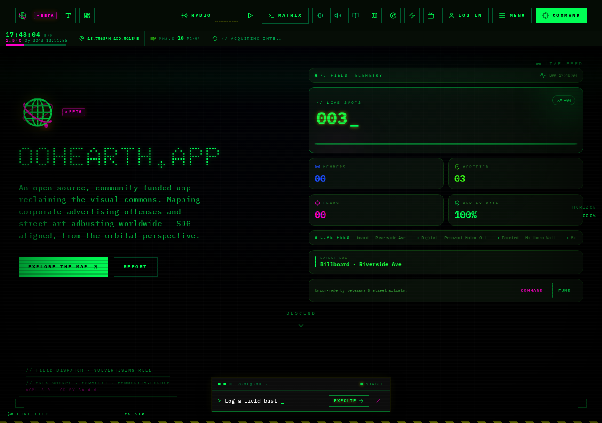
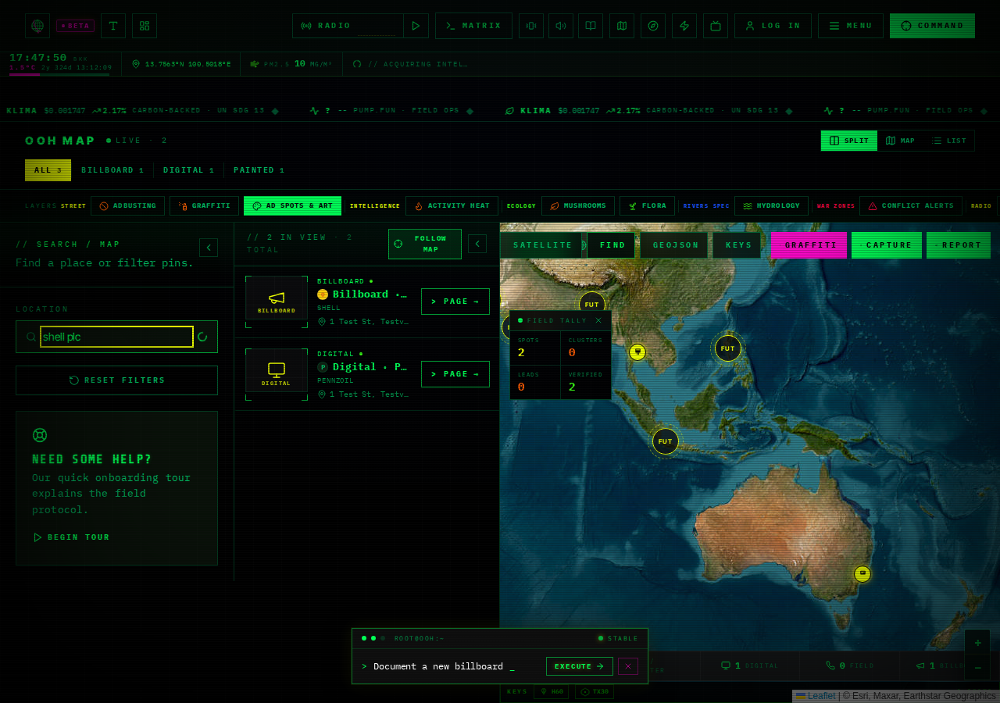
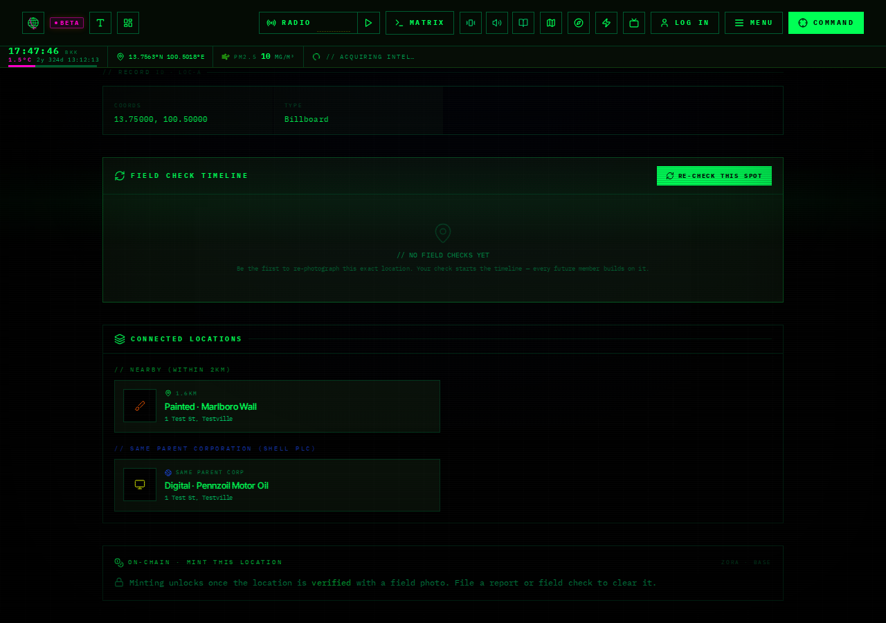
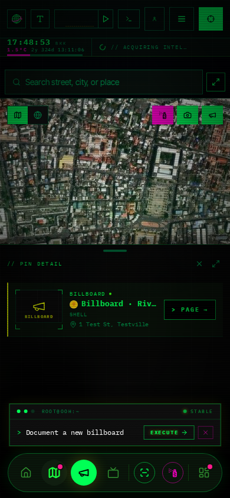
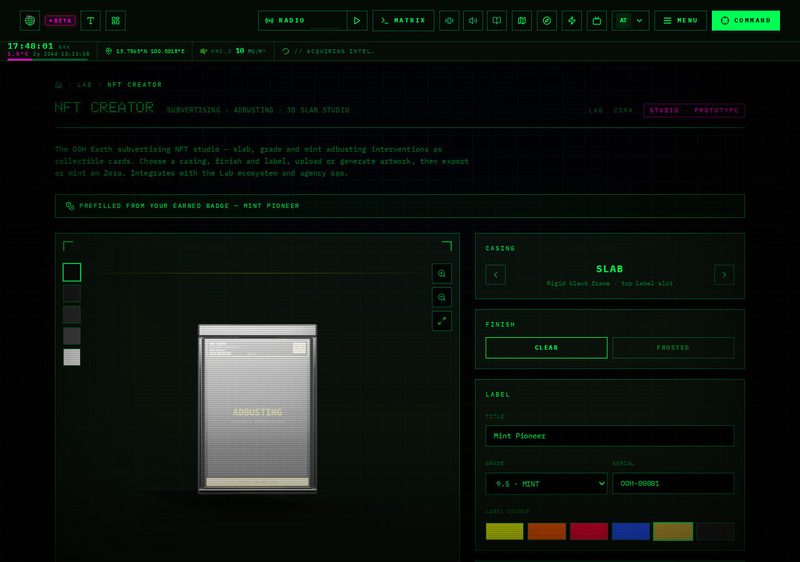

This showcase is a static, offline handoff document. Routes referenced
below (e.g. /map, /report) are paths inside the
OOH Earth application, not public links from this page — open them in
your own running instance of the app to try each feature live.
1. Adbusting
Verified Existing

Real screenshot — home → report entry point
Dave asked forFast, obvious capture of a billboard with real identification.
What existsA 4-step wizard (/report) and a live camera capture (/ar), both running the same real AI scan. No login required to file a report.
Why it mattersThis is the core loop everything else strengthens — if this isn't fast and obvious, nothing else matters.
Try it → /report or /ar
Evidence: EVIDENCE_INDEX.md #01, #09 · Test: e2e/report-scan-dedup.spec.ts, e2e/ar-lens-brand-scan.spec.ts
2. Brand Intelligence
Verified Existing

Real screenshot — map filtered by brand search
Dave asked forSee the brand, agency, and corporation behind an ad, not just a photo.
What existsReal logo lookup (60+ marks), brand/agency/parent-corp/operator/sector shown on every location.
Why it mattersThis is the "who's actually behind this" moment — the product's stated differentiator.
Try it → any /location/:id
Evidence: EVIDENCE_INDEX.md #01 · Test: e2e/advertiser-sector-inference.spec.ts
3. Corporate Footprint
Shipped

Real screenshot — connected locations by parent corp
Dave asked forMap all corporate relationships across brands.
What existsA location page now shows sibling locations under the same parent corporation, not just the same brand.
Why it mattersTwo differently-branded surfaces owned by the same holding company were previously invisible to each other.
Try it → any /location/:id → "Connected Locations"
Evidence: EVIDENCE_INDEX.md #03 · PR #91 · Test: e2e/related-locations-parent-corp.spec.ts (2/2)
4. Activity Heat
Shipped

Real screenshot — hotspot click opens nearest report
Dave asked forSee where activity concentrates, not just a marker list.
What existsA real report-density heat layer; clicking a hotspot opens the actual report behind it.
Why it mattersTurns the map from a picture of the data into a way to act on it.
Try it → /map → toggle "Activity Heat" → click a hotspot
Evidence: EVIDENCE_INDEX.md #04, #05 · PR #92, #96 · Test: e2e/heat-layer.spec.ts, e2e/heat-layer-click-handoff.spec.ts
5. AR Intelligence
Shipped
Dave asked forAR billboard capture that carries brand + corporate context, not a gimmick.
What existsAR uses the same real AI scan the report wizard uses, and now shows parent corporation alongside brand. The "lock on" reticle is honestly a manual gesture, not object detection.
Why it mattersAR feels like part of the intelligence system, not a separate toy.
Try it → /ar (needs camera + HTTPS)
Evidence: EVIDENCE_INDEX.md #06, #07 · PR #95 · Test: e2e/ar-lens-brand-scan.spec.ts
6. Contribution / Trophies
Verified Existing
Dave asked forUsers collect points and trophies, displayed digitally.
What existsA real XP/level/badge/quest system driven by actual contribution counts — not decorative.
Why it mattersThe foundation for identity and gamification already exists and is real.
Try it → /operative (needs login + ≥1 real report)
Evidence: EVIDENCE_INDEX.md #08
7. NFT Studio
Shipped (connection)

Real screenshot — studio pre-filled from earned badge
Dave asked forTrophies displayable as NFTs / collectibles.
What existsAn earned badge now offers "Mint as NFT," pre-filling the studio from that badge's real tier. On-chain minting itself remains external (Zora) by design — not faked.
Why it mattersConnects two previously disconnected real systems without inventing on-chain functionality that doesn't exist.
Try it → /operative → hover an earned badge → "Mint as NFT"
Evidence: EVIDENCE_INDEX.md #08 · PR #98 · Test: e2e/nft-badge-mint-prefill.spec.ts (3/3)
8. Engineering Quality
Shipped
Dave asked forA product that's actually maintainable, not just demoable.
What existsEvery CI gate (tests, lint, typecheck, build, format) now produces a plain-English failure summary instead of requiring a raw-log read.
Why it mattersFuture failures get diagnosed in seconds, not by scrolling hundreds of log lines.
See it → .github/workflows/ci.yml + scripts/ci-*-summary.mjs
Evidence: 07_TEST_EVIDENCE.md · PR #85, #99